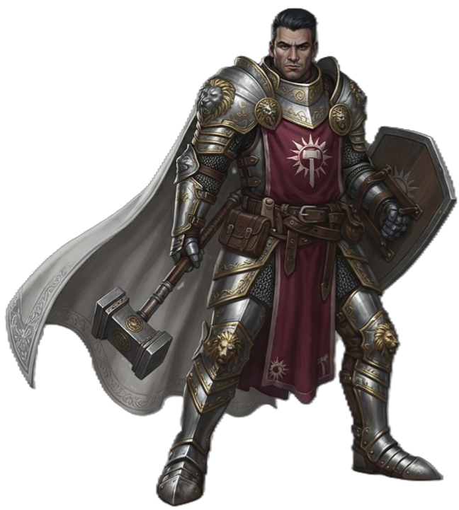

| Rolle | Verteidiger / Frontkämpfer · Heiler · Unterstützer |
| Zauberertyp | Halbzauberer Zauberslots ab L2 (max Rang 5) |
| Primärer Schadensattribut | Stärke (STR) |
| Sekundärer Schadensattribut | Weisheit (WIS) |
| Zauberattribut | Weisheit (WIS) |
| TP (L1) | 10 |
| TP pro Level | 6 |
| Rüstung | Schwer (alle Rüstungen) |
| Waffen | Kampfwaffen (alle) |
| Rettungswürfe | Weisheit (WIS), Charisma (CHA) |
| Attributsteigerung (Level) | 4, 8, 12, 16, 19 |
| Fertigkeiten (2 zur Auswahl) | Athletik, Einschüchtern, Religion, Heilkunde, Überreden, Etikette, Wahrnehmung |
Der PALADIN ist ein heiliger Krieger — eine Mischung aus Frontkämpfer und göttlichem Zauberer. Er hält die Linie wie ein KRIEGER, heilt wie ein KLERIKER und kanalisiert die Macht seines Glaubens in Form von Schlägen, Auren und Schwüren. Seine Stärke liegt in der Vielseitigkeit: er kann Schaden austeilen, Verbündete beschützen und Untote vernichten — oft in derselben Runde.
| Level | Fähigkeit | Beschreibung |
|---|---|---|
| L1 | Göttlicher Sinn | Erkenne Untote, Feen und Dämonen in der Nähe. |
| L1 | Handauflegen | TP-Pool (5 × Level). Heilen, Krankheiten/Gifte heilen (5 Punkte). |
| L2 | Kampfstil | Auswahl: Verteidigung / Duelieren / Zweihandkampf / Schutz / Zweiwaffenkampf |
| L2 | Göttlicher Schlag | Bei Treffer: verbrauche Zauberslot für 2W8 Strahlenschaden (+1W8 pro Rang darüber, +1W8 gegen Untote/Dämonen). |
| L2 | Zauberei | Halbzauberer-Progression, WIS als Zauberattribut. |
| L3 | Göttlichkeit kanalisieren | 1/Rast (2/Rast ab L5). Pool für Untote vernichten und Geweihte Waffe. |
| L5 | Zusatzangriff | 2 Angriffe pro Angriffs-Aktion |
| L6 | Aura des Schutzes | +CHA-Mod auf Rettungswürfe (Passiv, 10ft). |
| L7 | Aura-Verbesserung | Aura-Radius erhöht sich. |
| L10 | Göttliche Vitalität | Bei Kampfbeginn: temporäre TP in Höhe deines Levels. |
| L11 | Zusatzangriff 2 | 3 Angriffe pro Angriffs-Aktion |
| L14 | Reinigende Berührung | 1/Lange Rast: Entferne einen Zustand von einem Verbündeten durch Berührung. |
| L18 | Aura-Verbesserung | Aura-Radius auf 30ft (7 Felder). |
| L20 | Heiliger Schwur | 1/Lange Rast: +1W8 auf alle Rettungswürfe für 1 Minute. |
| Fähigkeit | Aktion | Nutzung | Level | Beschreibung |
|---|---|---|---|---|
| Handauflegen — Heilung | Aktion | Handauflegen-Pool | L1 | Lege deine Hand auf eine Kreatur und heile sie. Jeder ausgegebene Punkt heilt 1 TP. Pool: 5 Punkte pro Level. |
| Handauflegen — Krankheit heilen | Aktion | 5 Punkte | L1 | Verbrauche 5 Punkte aus dem Handauflegen-Pool, um eine Krankheit vom Ziel zu heilen. |
| Handauflegen — Gift neutralisieren | Aktion | 5 Punkte | L1 | Verbrauche 5 Punkte aus dem Handauflegen-Pool, um Gift vom Ziel zu neutralisieren. Entfernt den Zustand 'Vergiftet'. |
| Göttlicher Schlag | Freie Aktion | Zauberslot | L2 | STRAHLEND Wenn du triffst, verbrauche einen Zauberslot für 2W8 Strahlenschaden. +1W8 pro Rang darüber. +1W8 gegen Untote/Dämonen. |
| Glaubensschild | Bonus-Aktion | Zauberslot | L2 | STRAHLEND Ein schimmerndes Feld umgibt eine Kreatur und gewährt +2 RK für die Dauer. |
| Göttliche Gunst | Bonus-Aktion | Zauberslot | L2 | STRAHLEND +1W4 Strahlenschaden auf alle Angriffe für 1 Minute. |
| Schutz vor Bösem | Aktion | Zauberslot | L2 | Ziel bekommt Absorption gegen Untote, Feen und Dämonen. |
| Brandender Schlag | Bonus-Aktion | Zauberslot | L2 | FEUER Nächster Treffer: +1W6 Feuerschaden + 1W6/Runde (CON-Rettungswurf). |
| Zorniger Schlag | Bonus-Aktion | Zauberslot | L2 | PSYCHISCH Nächster Treffer: +1W6 Psychisch + Verängstigt (WIS-Rettungswurf). |
| Geweihte Waffe | Aktion | Göttlichkeit | L3 | Kanalisiere Göttlichkeit: Waffe erhält +2 auf Angriffswürfe für 1 Minute. |
| Untote vernichten | Aktion | Göttlichkeit | L3 | STRAHLEND Kanalisiere Göttlichkeit: Untote in 30ft müssen einen CON-Rettungswurf ablegen oder erleiden 10W8 Schaden. |
| Aura der Vitalität | Aktion | Zauberslot | L5 | Aura: Heile 2W6/Runde als Bonus-Aktion für 1 Minute. |
| Blendender Schlag | Bonus-Aktion | Zauberslot Rang 3 | L5 | STRAHLEND Nächster Treffer: +3W8 Strahlend + Geblendet (CON-Rettungswurf). |
| Göttliche Aura | Aktion | Zauberslot Rang 3 | L6 | Aura 10ft: Selbst + Verbündete immun gegen Verängstigung und Bezauberung. |
| Aura des Lebens | Aktion | Zauberslot Rang 4 | L7 | Aura: Verbündete haben Widerstand gegen Nekrotischen Schaden. |
| Verbannung | Aktion | Zauberslot Rang 4 | L7 | Verbanne ein extraplanares Wesen (CHA-Rettungswurf). |
| Fluch brechen | Aktion | Zauberslot Rang 3 | — | STRAHLEND Alle Flüche, die auf einer Kreatur lasten, werden aufgehoben. Verfluchte Gegenstände können danach normal abgelegt werden. |
| Fluch legen | Aktion | Zauberslot Rang 3 | — | SCHATTEN Verfluche eine Kreatur (Konzentration). |
| Reinigende Berührung | Aktion | 1/Lange Rast | L14 | Entferne einen Zustand von einem Verbündeten durch Berührung. |
| Heiliger Schwur | Aktion | 1/Lange Rast | L20 | Für 1 Minute (10 Runden) erhältst du +1W8 auf alle Rettungswürfe. |
| Fähigkeit | Auslöser | Nutzung | Beschreibung |
|---|---|---|---|
| Schutz | Bei Treffer | 1/Zug | Wenn eine Kreatur innerhalb 5ft einen Verbündeten angreift, nutze deinen Schild um den Schaden zu halbieren. |
| Fähigkeit | Beschreibung |
|---|---|
| Aura des Schutzes | PASSIV +CHA-Mod auf Rettungswürfe (10ft, ab L6). |
| Aura des Mutes | PASSIV Selbst + Verbündete in der Nähe immun gegen Verängstigung. |
| Göttliche Vitalität | PASSIV Bei Kampfbeginn: temporäre TP in Höhe deines Levels. |
| Ressource | Mechanik | Verfügbarkeit |
|---|---|---|
| Handauflegen-Pool | 5 Punkte pro Level — Heilen (1 TP/Punkt), Krankheit/Gift heilen (5 Punkte) | Ab L1, Lange Rast |
| Göttlichkeit kanalisieren | 1/Rast (2/Rast ab L5, 3/Rast ab L18) — für Untote vernichten und Geweihte Waffe | Ab L3, Kurze/Lange Rast |
| Zauberslots | Halbzauberer-Progression (L2=1@R1, L5=2@R2, L9=2@R3, L13=2@R4, L17=2@R5) | Ab L2, Lange Rast |